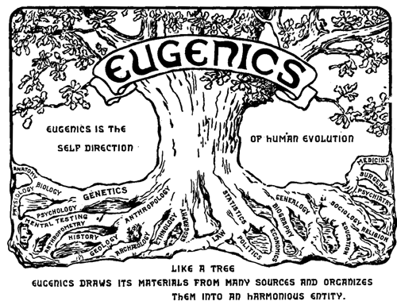
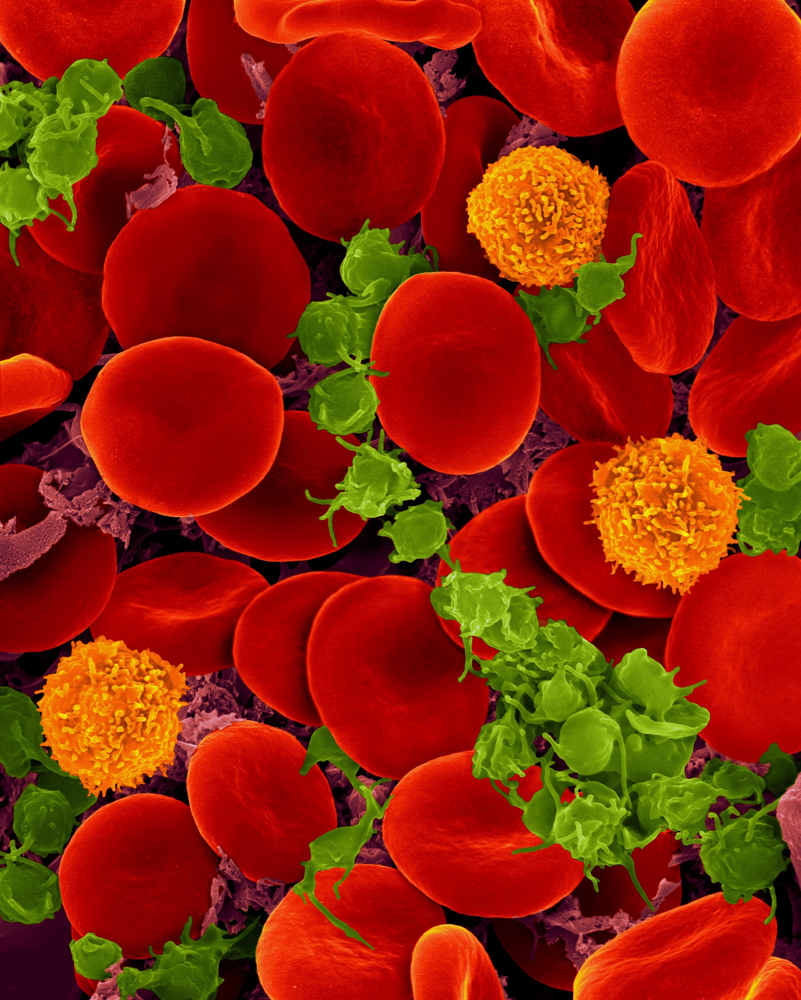

What is it?
Human genetic modification is essentially just what it says on the tin - it is going into the human genome and changing our own genetic code. There have been attempts to do this before, however, this is arguably the first point in human history that we have managed to make intentional, substantive changes to our own genome. This raises a host of moral, ethical, and scientific issues, particularly around the possible risks of going into our own genome and ripping up the floorboards. Considering our… mixed track record with managing the few godlike powers we already have, it’s certainly possible some caution is warranted in this case. Let’s have a look at some of the ethical issues this technology poses, and what that might mean going forward.
A Bit of History
Human genetic editing has been attempted numerous times over the course of recent history, with an overwhelmingly bad track record. This is primarily because the most commonly adopted tool for this purpose was eugenics, an extension of scientific racism which believed that the human race could be improved using selective breeding for certain traits. This ideology cannot be removed from the context of racism, ableism, homophobia, and many other kinds of discrimination, and led to at least 400 000 forced sterilizations and 70 000 euthanizations in Nazi Germany alone.
Sterilization of the mentally and physically defective has long been advocated, but only recently has it seeped into the public consciousness. From the day when Plato wrote his Republic to the present, eugenists [sic] have advanced various solutions to the problem of the defective, but sterilization seems to meet the requirements of the situation most aptly. For while it gives protection to society, yet it deprives the defective of nothing except the privilege of bringing into the world children who would only be a care to themselves and a charge to society…. Only those mentally defective and those incurably diseased should be sterilized. Many subnormal families whose intelligence is not of a high order are capable of raising useful citizens. But society should have some voice in the charges and responsibilities it will assume, not only now, but in the generations to come.
— Tommy Douglas [Tommy Douglas and Eugenics Article]
Some day we will realize that the prime duty, the inescapable duty, of the good citizen of the right type is to leave his or her blood behind him in the world; and that we have no business to permit the perpetuation of citizens of the wrong type.
— Theodore Roosevelt
It is hard to overstate the overwhelming popularity of eugenics in the late 1800s to early 1900s. Eugenic beliefs were espoused by public figures in Canada, the U.S., and elsewhere, and eugenics was in most respects a completely respectable set of beliefs to hold. [National Human Genome Research Institute Article] In the United States, 32 states had eugenics laws, — and in Canada, both Alberta and British Columbia passed legislation that legalized the sterilization of mental hospital inmates. [Tommy Douglas and Eugenics - Canadian Encyclopedia] Alberta’s sexual sterilization act remained in place until 1972, disproportionately sterilizing indigenous women. Coercive sterilization is still legal in Canada today. [AlbertaU Reproductive control article]
 Of course, there was a significant repudiation of eugenicist ideas following the second world war and the horrors inflicted by the Nazi German state to those deemed “unfit,” in particular Jewish people, as well as other minorities such as Sinti and Roma people, those with disabilities, and LGBTQ+ people. [National Human Genome Research Institute article] However, this is the context in which any investigation of the ethics of human genetic editing must be held; there is no separating the act of genetic modification from its historical context, and so any use of genetic editing in humans must be mindful of the past and wary of any decisions that may contribute to repeating it.
Of course, there was a significant repudiation of eugenicist ideas following the second world war and the horrors inflicted by the Nazi German state to those deemed “unfit,” in particular Jewish people, as well as other minorities such as Sinti and Roma people, those with disabilities, and LGBTQ+ people. [National Human Genome Research Institute article] However, this is the context in which any investigation of the ethics of human genetic editing must be held; there is no separating the act of genetic modification from its historical context, and so any use of genetic editing in humans must be mindful of the past and wary of any decisions that may contribute to repeating it.
Further Complications
 In January of 2021, an article was published in the New England Journal of Medicine called CRISPR-Cas9 Gene Editing for Sickle Cell Disease and β-Thalassemia. [The article] This study used CRISPR-Cas9 gene editing in humans to treat sickle cell anemia, to very positive results. Experiments are also being performed in mice on a potential cure for HIV which would use antiretrovirals in combination with human genetic editing to cure the disease. [Antiretrovirals HIV Mice article] These treatments throw up entirely new and different ethical dilemmas, since now, the rightful caution must be balanced against the lives of those that this technology has the power to help.
In January of 2021, an article was published in the New England Journal of Medicine called CRISPR-Cas9 Gene Editing for Sickle Cell Disease and β-Thalassemia. [The article] This study used CRISPR-Cas9 gene editing in humans to treat sickle cell anemia, to very positive results. Experiments are also being performed in mice on a potential cure for HIV which would use antiretrovirals in combination with human genetic editing to cure the disease. [Antiretrovirals HIV Mice article] These treatments throw up entirely new and different ethical dilemmas, since now, the rightful caution must be balanced against the lives of those that this technology has the power to help.
How much risk is it worth to cure HIV? What is it worth to lengthen the life expectancy of someone with sickle cell anemia by 20-30 years? [CDC Grand Rounds: Improving the Lives of Persons with Sickle Cell Disease] These are deeply personal questions that will depend on your individual risk tolerance. However, as a society, we will have to come to terms with the fact that a coherent decision on this issue, even an implicit one, is necessary to be able to regulate these technologies.
Regulating the technologies that allow human genetic engineering, while it is a complicated and difficult task, is also completely necessary. This is an incredibly powerful technology that could be extremely dangerous in the wrong hands.
The New Eugenics
There are a lot of dangers that come with the power to edit our own genome. An important one follows quite naturally from our previous discussion of eugenics, and that is a return of eugenics through genetic editing. [Human enhancement: The new eugenics] Look at me, constructing an argument. So, what is this new form of eugenics, and why is it dangerous?
Well, as we’ve seen, eugenics is an attempt to improve the human race by removing “undesirable” traits. Of course, the technology of human genetic modification is extremely useful to this goal - it would allow our hypothetical eugenicist to alter people’s traits before they were even born, or perhaps even make so-called “germline” edits to the human genome, which are inheritable* and thus are passed to offspring. [Chinese scientists genetically modify human embryos] This would allow our eugenicist’s vision of the perfect human, were they successful enough, to live on into the future, creating offspring with the same genetic changes as them (of course, assuming that they only made children with others who had been genetically modified).
One of the primary objections to this use of genetic editing technology is from people with disabilities and their advocates. They argue that while it would obviously be wonderful if this technology could be used to cure certain harmful genetic diseases, the risk of eugenicists using it to erase certain genetically heritable disabilities and neurodivergent traits such as autism and Down’s Syndrome. Genetic testing is, in fact, already being used to prenatally screen for Down’s syndrome, and in the vast majority of cases, a positive prenatal screen for Down’s syndrome convinces the parents to abort their child. [The Last Children of Down’s Syndrome] People with disabilities and advocates argue that these disabilities are fundamentally distinct from genetic diseases, since their issues stem primarily from society rather than from the disability itself. People with autism and Down’s syndrome can live full, happy lives - however, they live in a society which tends to make that far more difficult for them. Is it worth genetically editing these disabilities and the people who have them out of existence just because we can’t get our sh*t together enough to accommodate them?
Another, related issue, is that genetics is complicated. In nearly all cases, there is not a simple, one-to-one connection between a gene and a trait. While there are a few single base pair mutations that are associated with certain traits, such as sickle cell anemia and β-Thalassemia, [Sickle Cell Disease-Genetics, Pathophysiology, Clinical Presentation and Treatment] these are extremely rare. The interplay between genes is extremely complex, which opens up the possibility for unintended consequences to come into play when attempting to make targeted edits to our genome.

In 2015, Chinese scientists edited the genomes of 86 embryos in an attempt to edit the gene responsible for β-Thalassemia, a blood disorder. [Chinese scientists genetically modify human embryos] This caused some alarm among scientists. It crossed a very clear line that had been established in the scientific community about human genetic modification, and in doing so, it illuminated the very reasons that this line was there in the first place.
In the end, 71 of 86 embryos survived the process. Of those that survived, 54 were genetically tested. 28 of those tested had been edited, and only “a fraction” contained the right replacement genetic material. In their study, the researchers admitted that their screening likely only caught a small portion of the unintended genetic mutations, since their study only looked at a portion of the genome. “If we did the whole genome sequence, we would get many more,” said one of the researchers.
Conclusion
Human genetic editing is a difficult subject to talk about, because the stakes are extremely high. On the one hand, there’s the potential to cure many horrific diseases, improving the lives of millions! On the other hand, there’s the risk of introducing horrific mutations to our own genome; creating unintended consequences as byproducts of certain changes; or even malicious actors using the technology for their own ends. These are issues that we’re going to have to balance as a society, and that requires coming to enough of an agreement to regulate this technology effectively. Science is not waiting for the regulation on this issue, and if it lags too far behind, we may be left with consequences that we are not prepared to handle.